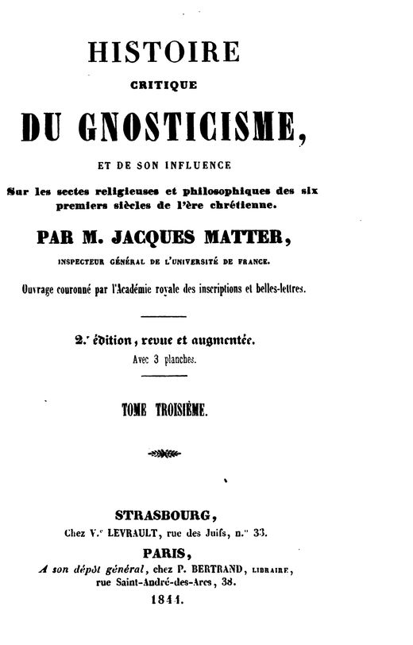
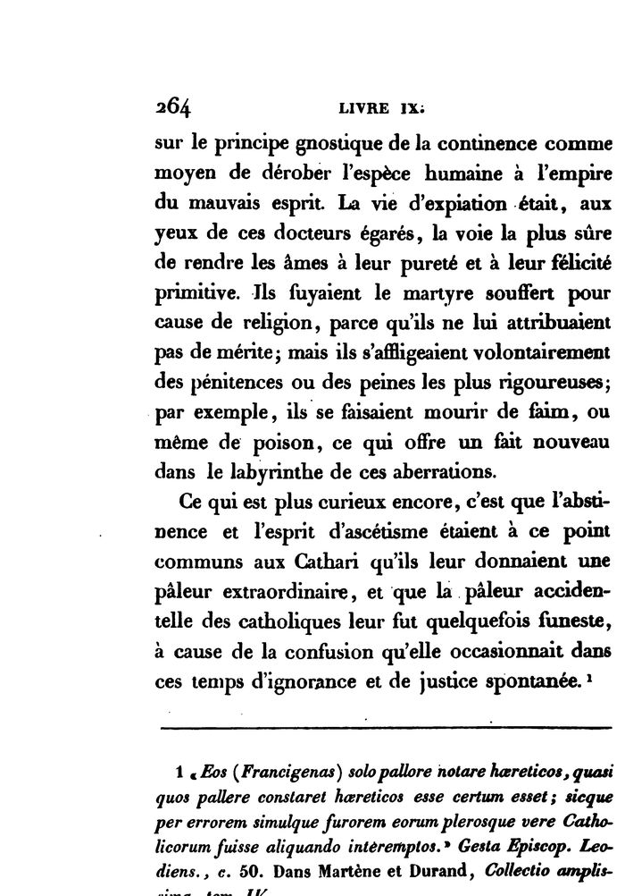

“Ils se faisaient mourir de faim”: Cathar fasting, and death by paleness (pp. 263–264)

French: tome III, livre IX, foot of p. 263 and p. 264, scan, with Matter’s note. Highlighted: what Lecky reports.

This party agreed, moreover, with that of Arras on the Gnostic principle of continence as a means of withdrawing the human race from the dominion of the evil spirit. A life of expiation was, in the eyes of these misguided teachers, the surest way of restoring souls to their original purity and happiness. They fled martyrdom suffered for religion’s sake, because they attributed no merit to it; but they afflicted themselves of their own will with the harshest penances and pains: for example, they starved themselves to death, or even poisoned themselves, which is a new fact in the labyrinth of these aberrations.
What is more curious still is that abstinence and the ascetic spirit were so common among the Cathari that they gave them an extraordinary pallor, and that the accidental pallor of Catholics was sometimes fatal to them, because of the confusion it caused in those times of ignorance and summary justice.1
1 “They (the French) marked out heretics by their paleness alone, as if it were certain that whoever was pale was a heretic; and so, by mistake and in their fury at once, many of them who were truly Catholics were at times put to death.” Deeds of the Bishops of Liège, c. 50, in Martène and Durand, Collectio amplissima, vol. IV.
Original French
Ce parti s’accordait, d’ailleurs, avec celui d’Arras, sur le principe gnostique de la continence comme moyen de dérober l’espèce humaine à l’empire du mauvais esprit. La vie d’expiation était, aux yeux de ces docteurs égarés, la voie la plus sûre de rendre les âmes à leur pureté et à leur félicité primitive. Ils fuyaient le martyre souffert pour cause de religion, parce qu’ils ne lui attribuaient pas de mérite; mais ils s’affligeaient volontairement des pénitences ou des peines les plus rigoureuses; par exemple, ils se faisaient mourir de faim, ou même de poison, ce qui offre un fait nouveau dans le labyrinthe de ces aberrations.
Ce qui est plus curieux encore, c’est que l’abstinence et l’esprit d’ascétisme étaient à ce point communs aux Cathari qu’ils leur donnaient une pâleur extraordinaire, et que la pâleur accidentelle des catholiques leur fut quelquefois funeste, à cause de la confusion qu’elle occasionnait dans ces temps d’ignorance et de justice spontanée.1
1 « Eos (Francigenas) solo pallore notare hæreticos, quasi quos pallere constaret hæreticos esse certum esset; sicque per errorem simulque furorem eorum plerosque vere Catholicorum fuisse aliquando interemptos. » Gesta Episcop. Leodiens., c. 50. Dans Martène et Durand, Collectio amplissima, tom. IV.
Matter gives no source for the starving and poisoning; his note supports only the pallor. Who “this party” were is set out on p. 263 (not transcribed here): a group whose teaching he compares to the Bogomils and the Euchites. The Latin of the Liège chronicle has not been checked against Martène and Durand.
“L’union d’Adam et d’Ève était le premier péché”: the heretics of Arras (pp. 259–260)
French: tome III, livre IX, ch. I, pp. 259–260, scans n268–n269. Transcribed from the OCR (not read letter by letter on the image); notes omitted.
The Manichaeans of Arras seem to have accepted the theory that souls are exiled in material bodies: they professed a great aversion to the propagation of the human race and to marriage. The union of Adam and Eve was, in their eyes, the first sin, and a fallen angel, Satanas, had drawn the first parents into it in order to keep souls in the material world and under his obedience. The true disciples of Jesus Christ, they said, must thwart his designs, to free themselves from his despotism, by abstaining and living, men and women, in a spiritual community. They cited a text of St Luke to show that only the children of this world marry, and that those who share in the kingdom of God and are destined for the resurrection must forbid themselves this sensual act and lead a life as pure as the angels’.
Original French
Les Manichéens d’Arras paraissent avoir admis la théorie de l’exil des âmes dans les corps matériels: ils professaient une grande aversion pour la propagation de l’espèce humaine et le mariage. L’union d’Adam et d’Ève était, à leurs yeux, le premier péché, et un ange tombé, Satanas, y avait entraîné les protoplastes afin de retenir les âmes dans le monde matériel et sous son obéissance. Les vrais disciples de Jésus-Christ, disaient-ils, pour s’affranchir de son despotisme, doivent contrarier ses vues en s’abstenant et en vivant, hommes et femmes, dans une communauté spirituelle. Ils citaient un texte de S. Luc pour montrer que les enfants de ce monde sont les seuls qui se marient, et que ceux qui participent au royaume de Dieu et qui sont destinés à la résurrection, doivent s’interdire cet acte de sensualisme et tenir une conduite pure comme celle des anges.
Matter goes on (p. 260) to the apocryphal Gospel of John adopted by the Cathars, in which Satan orders the angel of the third heaven to enter a body of earth, and makes a woman from it for the angel of the second heaven: “But these angels wept …”. In Lecky’s note the context is a seventeenth-century fancy about sylphs, from the Comte de Gabalis, in which Adam’s sin was to desert a sylph for his wife; it is “this last notion”, that the apple stood for something else, that Lecky calls “a relic of Manicheism”.
Backlinks
Every place in Rationalism in Europe that links to this page (generated automatically when the site is built).